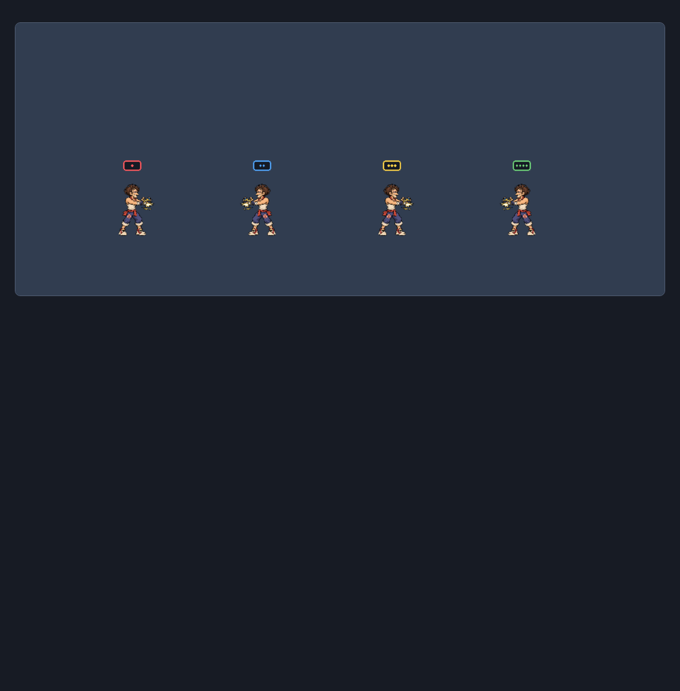

All animations · Every drawing · Batch report · Engine mapping and remaining work
Four duplicate All-Rounders, alternating facing, with upright color-and-pip player badges. Existing shared special-effect sheets now play in optional full-body mode. This capture is a renderer test, not a multiplayer match.

All 96 drawing pages loaded. Nine additional boards visually inspected; complete every-frame signoff remains open. 32 browser tests, 49 focused unit tests, TypeScript and a code-only production build passed. Asset inventory: 413 files verified with SHA-256.
Still optional: ?renderer=fullbody. 54 clips per fighter are connected to existing engine states; 82 are prepared. Missing state/mechanic hooks, real-match effects, memory/atlas optimization and full production packaging remain before default cutover.